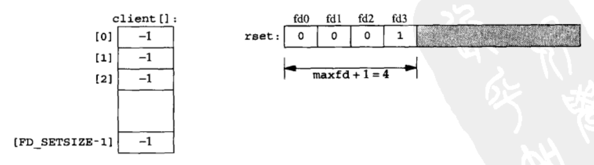

[UNP]:TCP客户服务器_IO复用
1. select版本
服务器端IO复用
服务器端IO复用的基本思想就是使用一个数据结构来维护客户于套接字描述符的映射关系，每当有一个客户建立连接时，就通过
accept()为其分配一个以连接文件描述符，在本地数据结构中添加一个映射条目，每当断开一个客户连接时，就回收该文件描述符，在本地的数据结构中移除该条目UNP中采用了一个数据
client[]和一个集合rest来表示这样的映射关系,client[n]表示客户n对应的套接字描述符
str_cli()
1
2
3
4
5
6
7
8
9
10
11
12
13
14
15
16
17
18
19
20
21
22
23
24
25
26
27
28
29
30
31
32
33
34
35
36
37
38
39
40
41
42
43#include "unp.h"
void
str_cli(FILE *fp, int sockfd)
{
int maxfdp1, stdineof;
fd_set rset;
char buf[MAXLINE];
int n;
stdineof = 0;
FD_ZERO(&rset);
for ( ; ; ) {
if (stdineof == 0)
FD_SET(fileno(fp), &rset);
FD_SET(sockfd, &rset);
maxfdp1 = max(fileno(fp), sockfd) + 1;
Select(maxfdp1, &rset, NULL, NULL, NULL); // 用户监听STDIN, sockfd两个描述符
if (FD_ISSET(sockfd, &rset)) { // Socket 描述符可读
if ( (n = Read(sockfd, buf, MAXLINE)) == 0) {
if (stdineof == 1) // 表明用户主动关闭
return;
else // 异常关闭
err_quit("str_cli: server terminated prematurely");
}
Write(fileno(stdout), buf, n); // 回显在终端上
}
if (FD_ISSET(fileno(fp), &rset)) { // STDIN可读
if ( (n = Read(fileno(fp), buf, MAXLINE)) == 0) { // 读取到EOF
stdineof = 1;
Shutdown(sockfd, SHUT_WR); // 发送FIN
FD_CLR(fileno(fp), &rset);
continue;
}
Writen(sockfd, buf, n); // 向服务端发送
}
}
}
客户端
客户端主函数代码与迭代版本一样， 只是更改了str_cli()函数
1 | |
服务端
1 | |
2. poll版本
poll()版本则不需要维护复杂的数据结构，只需要分配一个pollfd数组即可
服务器端
1 | |
本博客所有文章除特别声明外，均采用 CC BY-SA 4.0 协议 ，转载请注明出处！